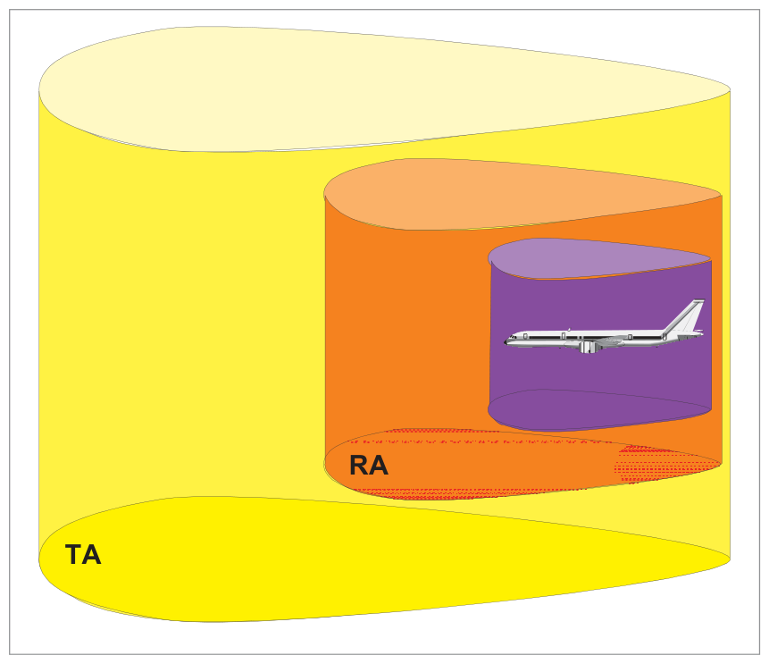
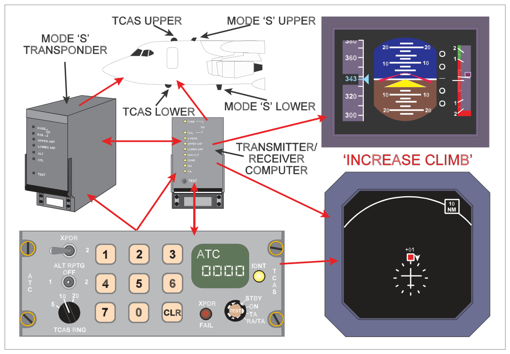
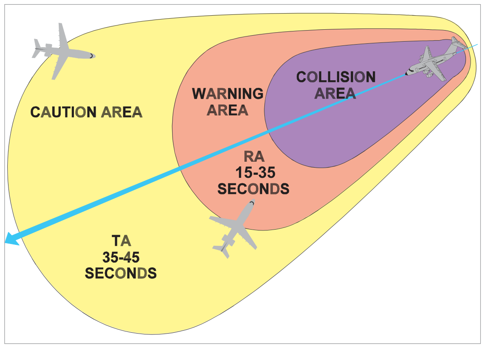
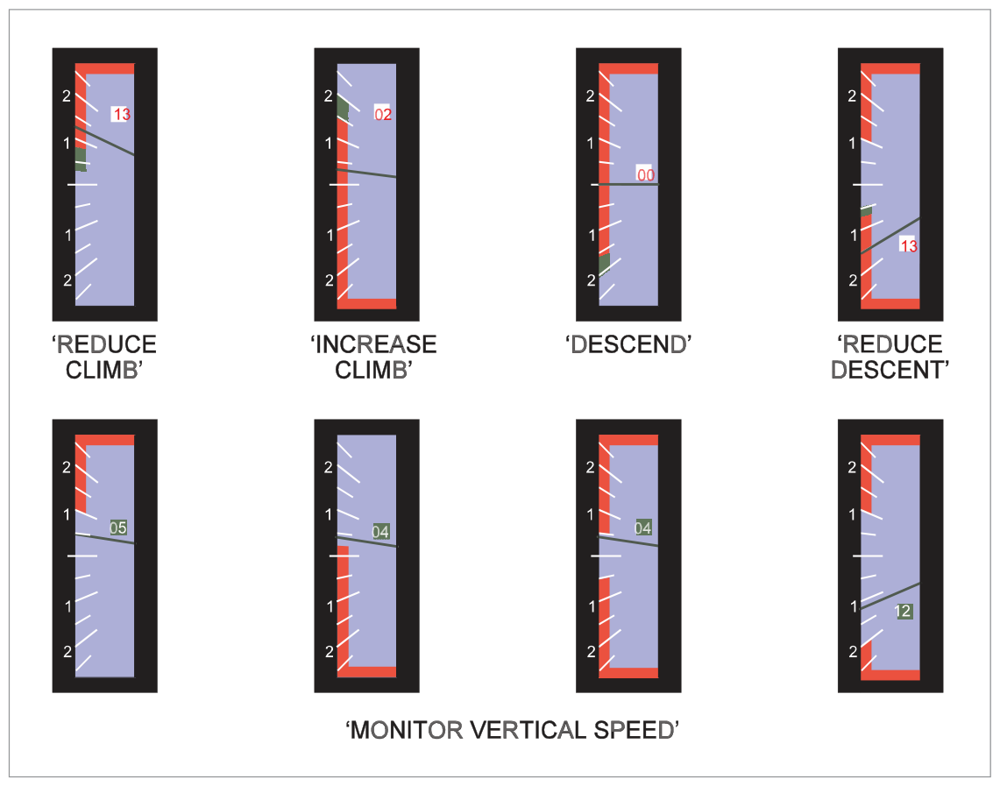
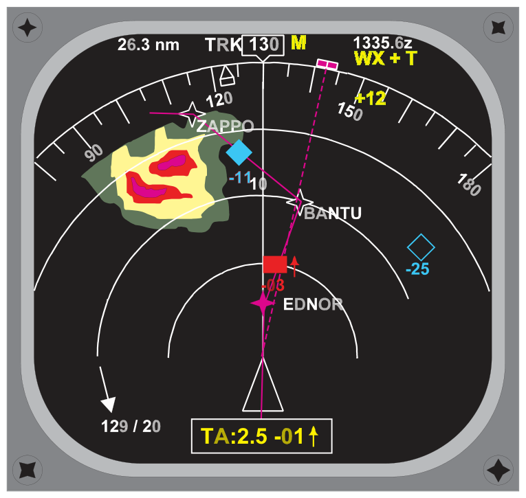
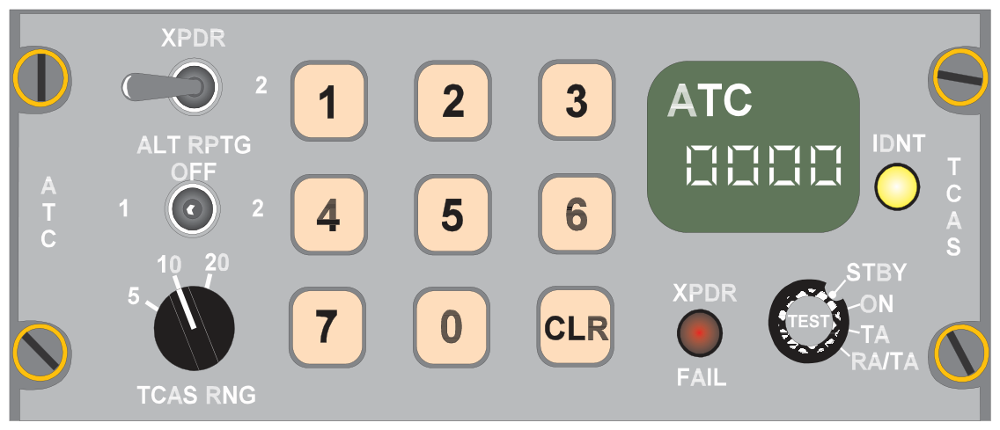
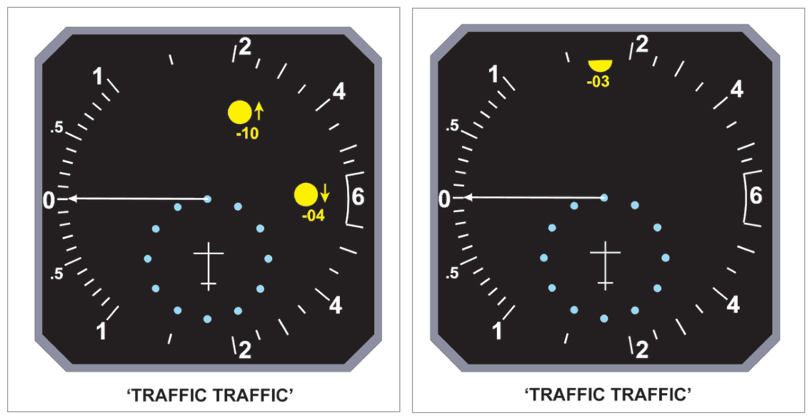
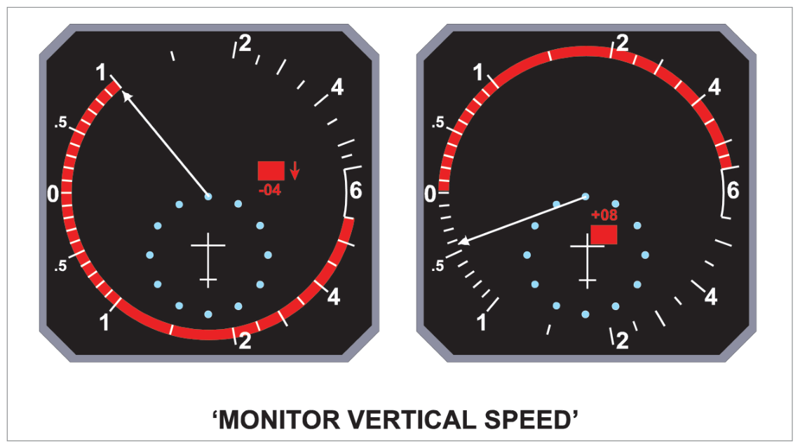
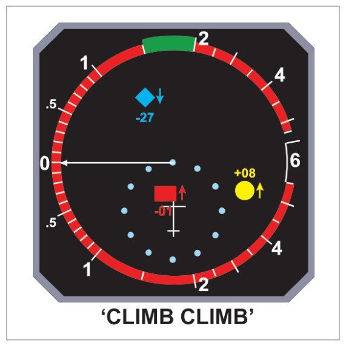
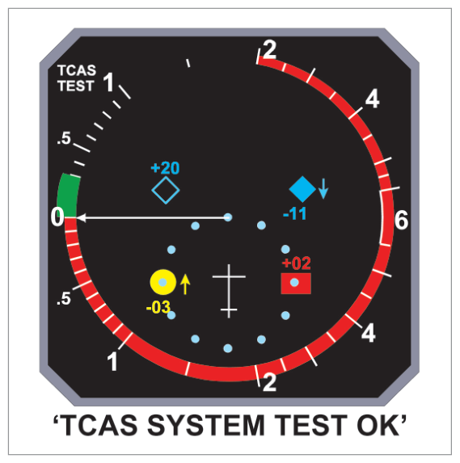

ACAS = Airborne Collision Avoidance System (ICAO name) TCAS = Traffic alert and Collision Avoidance System (US manufacturer name, now widely accepted alternative)
Four systems exist: TCAS I, II, III, IV (increasing levels of protection)
Regulatory Requirement: All commercial air transport turbine-powered aircraft registered in Europe with MTOM > 5700 kg or > 19 passenger seats must have at least ACAS II (version 7).
2. TCAS I
First generation collision avoidance system. Capabilities:
Detects and displays range and approximate relative bearing of nearby aircraft
If intruder carries Mode C: relative altitude also displayed
Does NOT give Resolution Advisories (no recommended manoeuvre)
3. TCAS II — Principle
TCAS II detects intruders, assesses collision risk, and presents both TAs and RAs. Uses Mode S data link to co-ordinate with other TCAS-equipped aircraft, providing complementary vertical avoidance instructions.
Operates on secondary radar principle using SSR frequencies of 1030 MHz (interrogation) and 1090 MHz (reply) in an air-to-air role.
Creates two protective 3D bubbles around the aircraft:
Outer bubble (caution area) → Traffic Advisory (TA) zone
Inner bubble (warning area) → Resolution Advisory (RA) zone

Fig 35.1 — TCAS II two protective 3D bubbles (source p.481)
Key TCAS II Limitation: TCAS II never offers collision avoidance commands in the horizontal plane — vertical plane only (climb or descend).
4. Aircraft Equipment (Transponder Requirements)
Transponder Type
Information Available
TCAS Capability
Mode A
Identity only (no height)
2D — TAs only
Mode C
Identity + height
3D — TAs and RAs
Mode S
Identity + height + discrete data link
3D + co-ordinated RAs between TCAS aircraft
None / off
—
Invisible to TCAS — collision risk!
5. Operation — Range, Bearing, Height
Range
Determined by measuring time between interrogation transmission and response (radar principle). Interrogation approximately once per second. In densely populated airspace: reduced surveillance — interrogation every 5 seconds, priority to closest aircraft.
Normal detection range: ~30 NM
Reduced surveillance range: ~5 NM
Bearing
Determined by directional antenna. Due to wavelengths and antenna size, bearing is the least accurate parameter.
ADC: At high altitude near performance ceiling → TCAS avoids climbing RA
IRS: Inertial vertical acceleration input

Fig 35.3 — TCAS system installation in a commuter/feeder airliner (source p.483)
7. Synthetic Voice Prioritization
Synthetic voice priority order (highest first):
Stall Identification/Prevention (stick shake/push) — voice inhibited during stick push
Windshear — inhibits both GPWS and TCAS
GPWS — inhibits TCAS
TCAS (lowest priority)
8. Traffic Advisories (TAs) and Resolution Advisories (RAs)
TCAS can monitor up to 30 aircraft simultaneously on display. Conflict assessment based on tau (τ) = Closest Point of Approach (CPA).
Advisory Type
Bubble Penetrated
Time to Collision
Symbol
Voice
TA (Traffic Advisory)
Outer (caution) bubble
45–35 seconds
Solid amber circle
"Traffic, Traffic"
RA (Resolution Advisory)
Inner (warning) bubble
35–15 seconds
Solid red rectangle
Climb/Descend commands

Fig 35.4 — TCAS TA and RA time-to-collision zones (source p.484)
9. Resolution Advisory Types
RA Type
Situation
Voice
Preventative RA
No collision risk unless one aircraft changes level
"Monitor Vertical Speed"
Corrective RA
Collision risk exists; manoeuvre required
"Climb" "Descend" "Increase Climb" "Decrease Descent" etc.
Separation intended with smooth RA response:300–600 ft vertical (700 ft above FL410). Separation varies with Sensitivity Level (SL) which decreases with altitude.

Fig 35.5 — Preventative and corrective RAs displayed on PFD vertical speed tape (source p.485)
10. Traffic Symbols
Symbol
Appearance
Meaning
Range / Height
RA Traffic
Solid red rectangle
Serious collision threat — manoeuvre immediately
Inner bubble
TA Traffic
Solid amber circle
Potential collision threat — prepare for RA
Outer bubble
Proximate Traffic
Solid cyan diamond
Near traffic, not a threat
Within 6 NM and ±1200 ft
Other Traffic
Hollow cyan diamond
Transponder-equipped, within display range
Within range, ±2700 ft (or ±8700/2700 in climb/descent)
11. Data Tag and Off-Scale Advisories
Data Tag (Mode C equipped intruders)
Relative altitude in hundreds of feet
+ sign = intruder above; − sign = intruder below
↑ or ↓ trend arrow when vertical rate ≥ 500 fpm
No number/arrow = non-altitude-reporting intruder
Off-Scale Traffic Advisory
When intruder is outside display range but inside caution/warning area: half of the appropriate symbol appears at the correct bearing at the edge of the display with data tag (if room).
Fig 35.6 — TCAS dedicated Plan Position Indicator (PPI) (source p.486)
Fig 35.8 — TCAS superimposed on EFIS Navigation Display in MAP mode (source p.487)
12. TCAS Displays and Control Panel

Fig 35.9 — Combined TCAS and SSR (ATC Transponder) control panel (source p.488)
Function Switch Positions
Position
Function
STANDBY
Warm-up power only; system not operational
ON
Transponder only operational (visible to ACAS, but no TCAS function)
TA
Transponder + TCAS operational; TAs only generated. "TA ONLY" shown on display. Used for engine failure, reduced performance, parallel runway ops.
RA/TA
Full operation — both RAs and TAs generated (normal operation)
TEST
Full BITE check. Success: "TCAS SYSTEM TEST OK"; Failure: "TCAS SYSTEM TEST FAIL"
TCAS RNG Switch
Selects display range: 5, 10, or 20 NM. Does NOT alter detection range or warning thresholds.

Fig 35.10 — Traffic advisory on electronic VSI (source p.488)

Fig 35.11 — Preventative resolution advisory on VSI (source p.489)

Fig 35.12 — Corrective resolution advisory on VSI (source p.490)

Fig 35.13 — TCAS test format on VSI (source p.490)
13. No Bearing Advisories
If TCAS cannot track intruder bearing (e.g., antenna screening), RA or TA appears lower-centre of display in appropriate colour. Up to two lines of information. Example: "TA 2.2- 04 ↑" = TA 2.2 NM away, 400 ft below, climbing ≥500 fpm.
No bearing information does NOT degrade TCAS ability to compute a TA or RA — only the display position is affected.

Fig 35.14 — No bearing RA and TA display (source p.491)
14. Action on Receiving TAs and RAs
Advisory
Crew Action
TA
Assimilate information. Begin visual search. Prepare for RA. Seek ATC advice if traffic not seen. Do NOT manoeuvre on TA alone.
RA
Initiate required manoeuvre immediately. Adjust flight path, power, trim. Inform ATC of deviation as soon as possible.
Rules for disregarding RAs:
Never manoeuvre OPPOSITE to RA (sense may have been co-ordinated with intruder via Mode S)
RAs may be disregarded ONLY if pilot visually identifies the conflicting traffic AND decides no deviation is necessary
If ATC instruction conflicts with RA — FOLLOW THE RA
Quick Revision Summary — Chapter 35:
ACAS = ICAO name; TCAS = manufacturer/common name. Mandatory >5700 kg or >19 seats (Europe)
TCAS I: TAs only. TCAS II: TAs + RAs (vertical only, never horizontal)
TCAS II frequencies: 1030 MHz (interrogate) / 1090 MHz (reply)
Mode A: TAs only (2D). Mode C: TAs + RAs (3D). Mode S: TAs + RAs + co-ordinated RAs
Interrogation: ~1/sec normal; every 5 sec reduced surveillance. Range: 30 NM normal / 5 NM reduced
Bearing least accurate parameter (small antenna, SSR wavelength)
RA height restrictions: no instructions <400 ft AGL; no descent RA <1000 ft; no increase descent <1450 ft
TA = outer bubble = 45–35 sec = solid amber circle. RA = inner bubble = 35–15 sec = solid red rectangle
Proximate traffic: solid cyan diamond; within 6 NM ±1200 ft
Data tag ↑↓ when V/S ≥500 fpm; + = above; − = below
RA types: Preventative ("Monitor VS") / Corrective ("Climb/Descend")
Intended separation (smooth response): 300–600 ft; 700 ft above FL410
On TA: look; prepare; do NOT manoeuvre. On RA: manoeuvre IMMEDIATELY; follow RA over ATC if conflict
Voice priority: Stall → Windshear → GPWS → TCAS
Oxford Questions & Additional Practice Q&A
Oxford Textbook Questions (Chapter 35)
Oxford Answers: 1-a 2-b 3-a 4-c 5-d
Q1.On receipt of a TCAS RA your action is to:
Initiate the required manoeuvre immediately
Make a note of the details
Request a flight clearance deviation from ATC
Do nothing until a TA is received
Correct Answer: (a) Initiate the required manoeuvre immediately
Explanation: An RA indicates a serious collision threat (35–15 seconds to CPA). The only correct response is immediate execution of the required manoeuvre. See Section 14.
Q2.Which statement concerning TCAS is correct?
TCAS II provides avoidance instructions in vertical and horizontal planes
TCAS II cannot provide information on non-SSR equipped intruders
TCAS II requires Mode S to be fitted to other aircraft
TCAS II provides advice on which way to turn
Correct Answer: (b)
Explanation: TCAS II relies on intruder SSR transponders. Aircraft without transponders are invisible. TCAS II only provides vertical avoidance (never horizontal). Mode S is needed for co-ordinated RAs but not required for basic detection (Mode A/C suffice). See Section 4.
Q3.The difference between TCAS I and TCAS II is:
TCAS II can provide TAs and RAs whilst TCAS I can only provide TAs
TCAS II is only for large aircraft >30 passengers
TCAS I requires Mode A only; TCAS II requires Mode C or S
TCAS II only works with EFIS equipped aircraft
Correct Answer: (a)
Explanation: TCAS I = TAs only (alerts crew to look for traffic). TCAS II = TAs + RAs (provides vertical manoeuvre advice). See Sections 2 and 3.
Q4.The aural messages provided by TCAS II are:
Threat, Climb; Threat, Descend
Climb left; Climb right; Descend left; Descend right
Explanation: TCAS II RA voice commands: "Climb" "Increase Climb" "Descend" "Increase Descent" "Monitor Vertical Speed" "Decrease Climb" "Decrease Descent" — all in the vertical plane only. No lateral (turn) instructions. See Section 3.
Q5.RAs may be disregarded only when:
RAs may be disregarded only when the pilot visually identifies the traffic, decides no deviation is necessary, and has clearance confirmed by ATC
RAs may be disregarded when they conflict with an ATC instruction
RAs must never be disregarded
RAs may be disregarded only when the pilot visually identifies the traffic and decides no deviation is necessary
Correct Answer: (d)
Explanation: RAs may be disregarded ONLY when the pilot visually identifies the conflicting traffic AND decides no deviation is necessary. ATC confirmation is NOT required — in fact, if ATC instruction conflicts with RA, the RA takes precedence. See Section 14.
Instructor's Note: This is one of the most exam-important rules. (a) is wrong because ATC confirmation is not required. (b) is wrong because ATC instruction that conflicts = follow the RA. (c) is wrong because there is one exception (visual identification).
Q6.TCAS will NOT give any avoidance commands when the aircraft is below:
1000 ft AGL
1450 ft AGL
400 ft AGL
200 ft AGL
Correct Answer: (c) 400 ft AGL
Explanation: TCAS gives no instructions at all below 400 ft AGL. Below 1000 ft: no descent RAs. Below 1450 ft: no increase rate of descent commands. The most restrictive is 400 ft — no instructions at all. See Section 6.
Instructor's Note: Three altitude limits to memorise: 400 ft (nothing), 1000 ft (no descent), 1450 ft (no increase descent). On approach these prevent TCAS from commanding dangerous go-arounds below decision height.